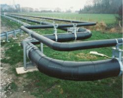
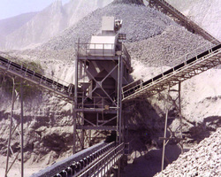

<div class="container">
  <div class="row">
    <side-navigation></side-navigation>
    <div class="col-8">
      <h3>Industry</h3>
      <div class="row" style="padding-top: 1rem;">
        <p class="card-text">For many years Prepco has provided engineering capabilities for the Mining and associated industries plus specialist pipeline solutions for the buried and above ground pipeline distribution of liquid mediums.</p>
        <p class="card-text">Our services include feasibility studies, design and Project Management for a host of industrial and commercial applications.</p>
        <p class="card-text">‘Safety comes first’ is our number one in all our services. The implications of placing this statement in second place IS serious and can be life threatening. We make it a rule that every employee or sub-contractor is knowledgeable with health and safety requirements, is responsible and accountable for ensuring safety at work and is equal to all when realizing and making decisions regarding safety.</p>
        <p class="card-text">Project Management is essential with what we do to ensure proper recording, problem solving, improvement processes, efficiency, value and communication.</p>
      </div>
      <div class="row justify-content-center" style="padding-top: 1rem;">
          <div class="col-md-6">
            
            <h4>Distribution Piping</h4>
          </div>
          <div class="col-md-6">
            
            <h4>Dust Control</h4>
          </div>
      </div>
    </div>
  </div>
</div>